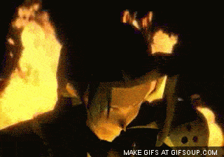
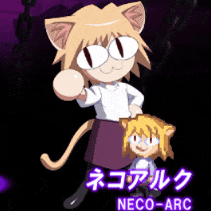
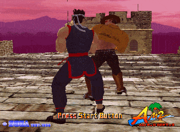
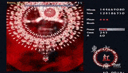
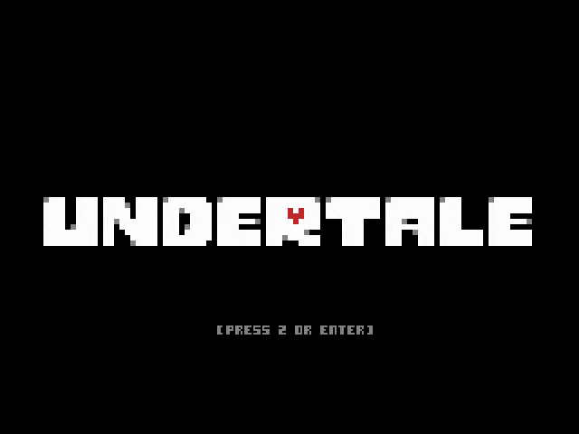
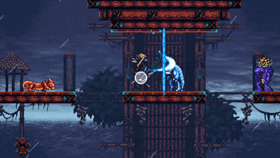
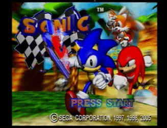
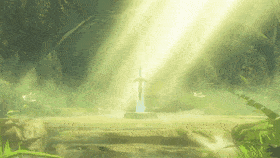
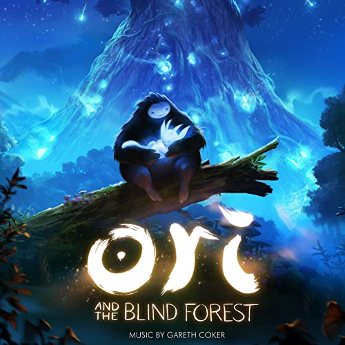
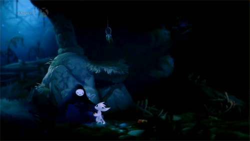

| Omslag/Cover | Liten .gif | Bandets namn, eller studion | Medlemmar/kompositörer | Album | Land | Källa |
|---|---|---|---|---|---|---|
 |
 |
PlatinumGames | Erina Niwa Hiro Hiroshi Yamaguchi Masami Ueda Naoto Tanaka Norihiko Hibino Rei Kondoh Takahiro Izutani Takayasu Sodeoka Yoshitaka Suzuki |
BAYONETTA Original Soundtrack ベヨネッタ オリジナル サウンドトラック |
Japan | Källa1 Källa2 |
 |
 | Square Enix | Nobuo Uematsu | FINAL FANTASY VII: ORIGINAL SOUNDTRACK ファイナルファンタジーVII オリジナル・サウンド・トラック |
Japan | Källa |
 |
 | TYPE-MOON | Raito, Yuki Kajiura | ALL OVER MELTY BLOOD ~ Melty Blood Actress Again for Limited Edition Original Sound
Track オールオーバー メルティブラッド ~ Melty Blood Actress Again for Limited Edition Original Sound Track |
Japan | Källa |
 |
 | Virtua Fighter, SEGA Sound Team | Takenobu Mitsuyoshi Fumio Ito Hidenori Syoji |
Virtua Fighter 3 Original Soundtrack バーチャファイター 3 SOUND TRACKS |
Japan | Källa1 Källa2 |
 |
 | 東方Project | ZUN | 東方紅魔郷 ～ the Embodiment of Scarlet Devil | Japan | Källa1 Källa2 |
 |
 | Undertale | Toby Fox | UNDERTALE SOUNDTRACK | USA | Källa |
 |
 | Rainbowdragoneyes | Eric W. Brown | The Messenger Original Soundtrack | USA | Källa1Källa2 |
 |
 | SEGA/Richard Jacques | Richard Jacques | Sonic R Original Soundtrack | United Kingdom | Källa1 Källa2 |
 |
 | Chad Seiter | Eímear Noone Susie Seiter Amy Andersson Giacomo Loprieno |
The Legend of Zelda 25th Anniversary Special Orchestra CD | United Kingdom United States ect. |
Källa1 Källa2 |
|  |  | Moon Studios | Gareth Coker | Ori and the Blind Forest | United Kingdom | Källa1 Källa2 |